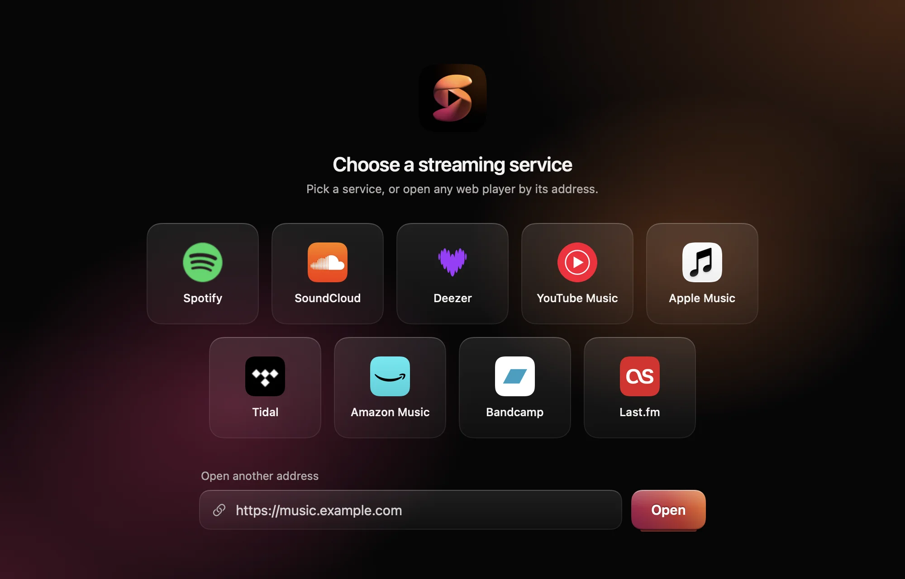
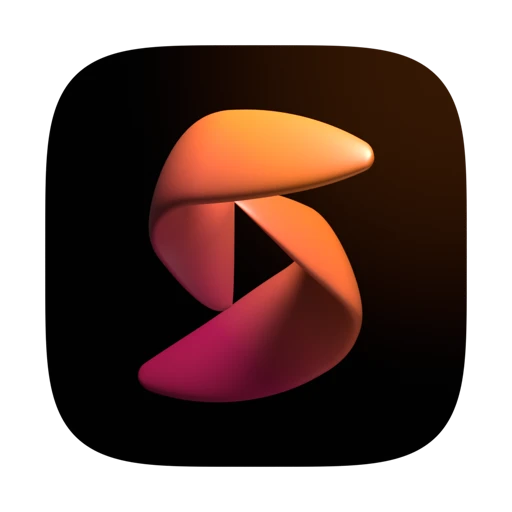

Your music service as a Mac app.
Streamlet opens the web player of Spotify, SoundCloud, YouTube Music or any other service in its own window. Close the window and the music keeps playing: you control it from the menu bar, the notch and a miniplayer.
Works with any streaming service that has a web player.
Pick a service, or open any web player by its address. You sign in as you do in the browser. If it plays in Safari, it plays in Streamlet.

A miniplayer that changes with its size.
Drag a corner. Small, it shows only the cover. Wide, it becomes a strip with the controls. Tall, it shows the cover with all details.
- Stays above other windows
- Hides at the screen edge and leaves a narrow tab
- Shows the video for services like YouTube
The notch becomes a play button.
On a MacBook with a notch, Streamlet puts the cover and a level meter next to it. A new track shows for a moment, then the notch is small again.
- Click
- Play or pause
- Scroll up or down
- Move in the track
- Swipe left or right
- Next or previous track
- Keep the pointer on it
- Title and time
Your data stays on your Mac.
You sign in to the service in Streamlet’s window. Cookies and website data stay in Streamlet’s WebKit data store on your Mac.
Streamlet sends no data to anyone other than the services you open.
To sign out of all services, right-click the menu bar item and choose Clear Website Data…

Get Streamlet.
Free and open source. Requires macOS 13 or later. The download is for Apple silicon. On an Intel Mac, build it yourself.
Download for Mac
Download Streamlet.zipThe app is not notarized, so macOS blocks its first start. Open System Settings → Privacy & Security and click Open Anyway. All releases are on GitHub.
Install via Terminal
curl -fsSL https://raw.githubusercontent.com/fgnass/streamlet/main/install.sh | sh
The script downloads the latest release, checks it, installs it to ~/Applications and opens it. macOS shows no warning.
Build it yourself
You need the Xcode Command Line Tools. This also works on an Intel Mac: the build is for the Mac it runs on.
git clone https://github.com/fgnass/streamlet
cd streamlet
./build.sh install